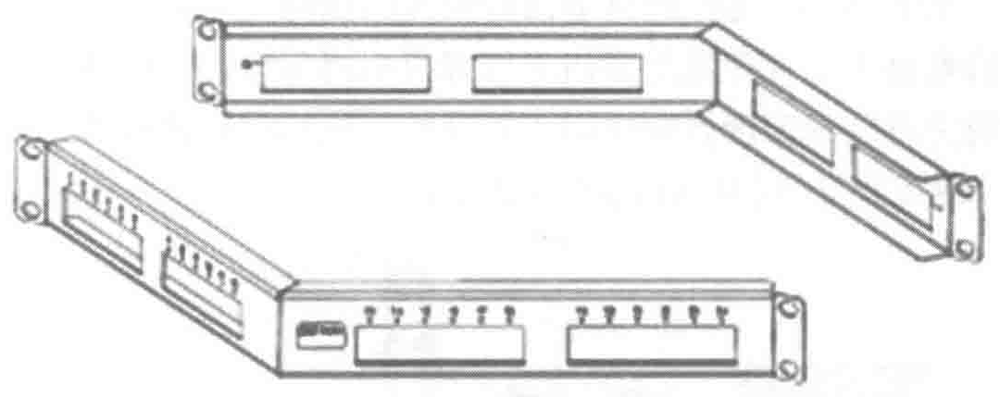
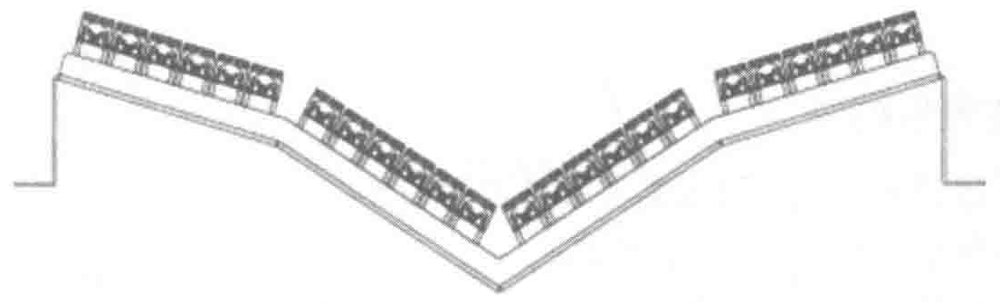
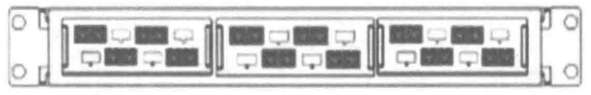

器，从而增加了机柜的密度，可以容纳更多数量的信息点。
角型高密度配线架的构成如图 7-25 所示。

凹型配线架主要应用于需要在服务器机柜背部进行配线的情况，配线架向下凹陷，从而即使关闭服务器机柜的背板，也不会压迫到任何的跳线，且方便维护操作人员快捷地接入整个配线界面。凹型高密度配线架的构成如图 7-26 所示。

机柜内的垂直配线架能够充分利用机柜空间，不占用机柜内的安装高度。在机柜侧面可以安装多个铜缆或者光缆配线架，它的好处是可以节省机柜空间，减少跳线的弯曲和更方便地插拔跳线。
高密度的光纤配线架，配合高密度的小型化光纤接口，可以在 1U 空间内容纳至少 48 芯光纤，并具备人性化的抽屉式或翻盖式托盘管理和全方位的裸纤固定及保护功能。更可配合光纤预端接系统做到即插即用，节省现场施工时间。光纤高密度配线架的构成如图 7-27 所示。

7.5.4 线缆管理器
通过水平线缆管理器和垂直线缆管理器实现对机柜或机架内空间的整合，提升线缆管